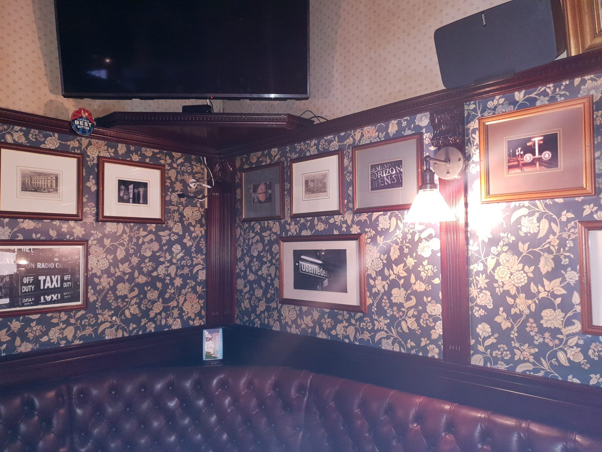

Est. Oberrieden
Ihr Quartierpub am Zürichsee.
Dienstag bis Samstag ab 17:00. Sonntag ab 12:00.
Fussball und Rugby
Wir zeigen alle grossen Fussball- und Rugbyspiele. Rufen Sie uns an, wenn Sie ein bestimmtes Spiel sehen möchten.
Die Spiele der Woche stehen auf unserer Google-Seite und auf Instagram, meist schon am Vortag.
Reguläre Woche
Bei Livesport und Anlässen bleiben wir länger offen, manchmal deutlich länger.
Die Zeiten für einen bestimmten Tag stehen immer auf unserer Google-Seite.
Zwei Minuten vom Bahnhof

Platzhalter von der alten Website. Wird ersetzt.
Ein richtiger britischer Pub in einem Dorf mit fünftausend Einwohnern. Man trifft sich hier auf halbem Weg zwischen Zürich und Zug, schaut das Spiel und bleibt auf einen Whisky.
Gelegentlich Irish Live-Musik. Der ganze Pub kann für private Anlässe gemietet werden. Rufen Sie Paul an unter 043 388 55 08.
Oberrieden Dorf
Keine Online-Reservation. Für einen Tisch an einem Spielabend oder für eine private Feier rufen Sie uns bitte an. Wir gehen ans Telefon.
Betreiber & Datenschutz
Telefon: 043 388 55 08
E-Mail: bigben@oberrieden.pub
UID: CHE-157.131.031
Verantwortlich für den Inhalt: Paul Michael Tischler, Geschäftsführer.
Diese Website setzt selbst keine Cookies und verwendet keine Analyse-Werkzeuge. Die Karte auf der Seite Anfahrt wird von Google geladen; dabei können Cookies von Google gesetzt werden. Auf den übrigen Seiten werden keine Inhalte von Drittanbietern eingebunden. Die Website wird von GitHub, Inc. in den USA auf GitHub Pages gehostet. Dabei werden zum Betrieb und zum Schutz der Website übliche Verbindungsdaten gespeichert, darunter die IP-Adresse. Weitere Daten werden nicht erhoben.
Wenn Sie uns anrufen oder schreiben, verwenden wir Ihre Angaben nur, um Ihre Anfrage zu beantworten. E-Mails an die oben genannte Adresse werden von Cloudflare an ein Postfach bei Google weitergeleitet. Sie haben das Recht auf Auskunft und Berichtigung. Wenden Sie sich dazu an die oben genannte Adresse.